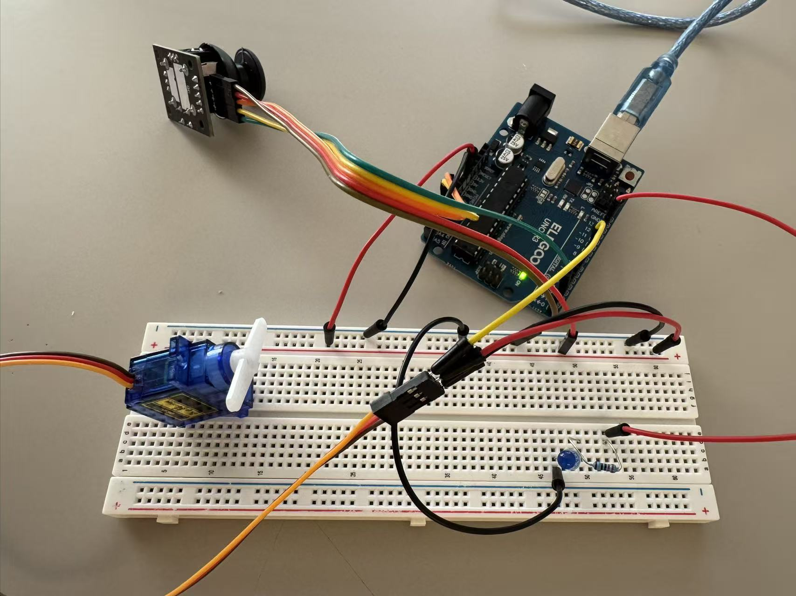
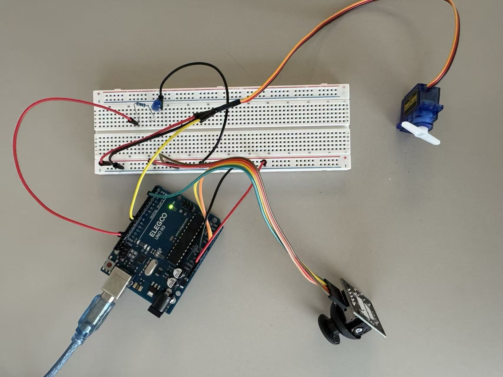
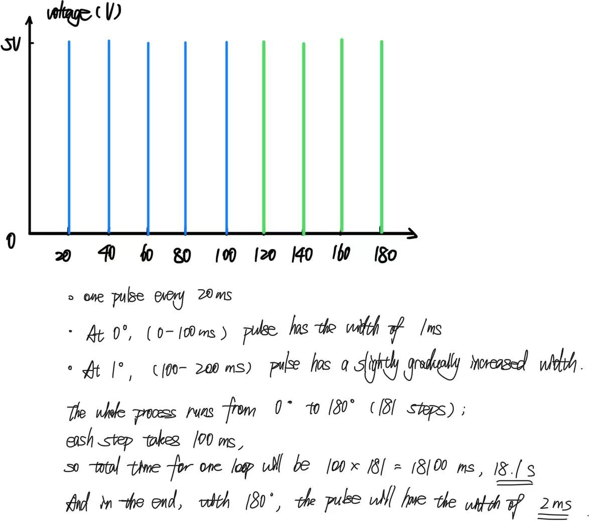

Joystick Schematic

Servo Schematic

LED Schematic

I created a simple interactive circuit where a joystick controls the motot's movement, while a push action activates an LED, demonstratign basic input-to-output control.

The calculations for the normal resistance in the circuits show that a minimum of 80 Ohm is needed to keep the LED connected to Pin13 safe; for clarity, I used 220 ohm resistance.


Since I use only one library, I have used two sensors and two actuators. The input includes two sensors, the X-axis joystick movement and the joystick button push. And the output is the servo motor movement and LED blinking, accordingly. To better visualize the motor movement, I also attched the plastic arm on the motor. And with the AnalogRead() function in the code, I also include calibration for sensor reading.
// load the external servo library
// the following code includes the library name of Servo.h,
// which somehow doesn't show correctly
#include
// create a servo subject
// in case of multiple servos
Servo myServo;
// Joystick pins definition
// the degree of movement needs to be tracked,
// so using the analog pins here
const int joyXPin = A0;
const int joyYPin = A1;
// to detect the button push, only digital pin is needed
const int joyButtonPin = 2;
// Servo pin definition
const int servoPin = 9;
// LED pin definition
const int ledPin = 13;
// Used variables definition
int xValue = 0;
int yValue = 0;
int buttonState = 0;
int servoAngle = 90;
// Calibration variables
// Maximum possible
int xMin = 1023;
// Minimum possible
int xMax = 0;
bool calibrated = false;
void setup() {
// "attach" is the function that connects the servo object to a physical pin
myServo.attach(servoPin);
// "write" is the function that moves the servo
// 90 degree ensures the servo starts in the middle when powered on
myServo.write(90);
// Initialize joystick button
pinMode(joyButtonPin, INPUT_PULLUP);
// Initialize LED
pinMode(ledPin, OUTPUT);
}
void loop() {
// Read joystick related values
xValue = analogRead(joyXPin);
yValue = analogRead(joyYPin);
buttonState = digitalRead(joyButtonPin);
// CALIBRATION MODE (before button is pressed)
if (!calibrated) {
// Update min and max values
if (xValue < xMin) {
xMin = xValue;
}
if (xValue > xMax) {
xMax = xValue;
}
if (buttonState == LOW) {
calibrated = true;
// Turn off LED
digitalWrite(ledPin, LOW);
// Pause so user can release button
delay(1000);
}
}
else {
// Map using CALIBRATED values instead of 0-1023
servoAngle = map(xValue, xMin, xMax, 0, 180);
// Constrain to prevent servo going out of bounds
servoAngle = constrain(servoAngle, 0, 180);
// Move servo
myServo.write(servoAngle);
// When button is pressed, turn on LED
if (buttonState == LOW) {
digitalWrite(ledPin, HIGH);
} else {
digitalWrite(ledPin, LOW);
}
delay(15);
}
}

This gif shows the completed circuit and how to play with it. While the joystick is moving in the horizontal direction, it triggers the movement of the motor, showing by the movement of the plastic arm. And when the button is pressed, the LED turns on; and when the button is released, the LED turns off.

// Store last known good value
// 400 is a random number for example, so is 200 as threshold
int lastValidReading = 400;
// Maximum allowed change
int threshold = 200;
int sensorValue = 0;
int readSensorWithValidation() {
int newReading = analogRead(sensorPin);
// Check if reading is reasonable (not too different from last time)
if (abs(newReading - lastValidReading) < threshold) {
// Reading is valid
sensorValue = newReading;
lastValidReading = newReading;
} else {
// Reading is erroneous, use last valid value
sensorValue = lastValidReading;
}
}
// Moving average variables
const int numReadings = 10;
// defines an array
// the readings from analog input
int readings[numReadings];
// index of current reading
int readIndex = 0;
// the running total
int total = 0;
// the average
int average = 0;
int inputPin = AO;
void setup() {
// Initialize all the readings to 0
for (int i = 0; i < numReadings; i++) {
readings[i] = 0;
}
}
void loop() {
// Subtract the last reading
total = total - readings[readIndex];
// Read from sensor
readings[readIndex] = analogRead(inputPin);
// Add the new reading to total
total = total + readings[readIndex];
// Move to next position
readIndex = readIndex + 1;
// If at end of array, wrap around to beginning
if (readIndex >= numReadings) {
readIndex = 0;
}
// Calculate the average (smoothed value)
average = total / numReadings;
}
ChatGPT is used to learn how to insert the library,
and to look up the usage of certain functions.
When I was trying to set up the pull-up resistance for the button,
I am not sure where to put the resistance with the joystick button,
so ChatGPT was used to come up with the initialization of
"pinMode(joyButtonPin, INPUT_PULLUP);"
ChatGPT was also used to help check and generate partial calibration codes,
specifically the bool() and if(!calibrated) parts.
I learnt it as a method to check if something's already done.
And when checking the codes,
ChatGPT also helped me troubleshoot and add the constraints to prevent servo going out of bounds,
"servoAngle = constrain(servoAngle, 0, 180);"
Following are the quotes from the conversations with LLM:
On INPUT_PULLUP for button setup:
"INPUT_PULLUP = configures pin as input with internal pull-up resistor enabled... Makes the pin normally read HIGH (5V). When button is pressed, it connects to ground → reads LOW (0V)."
On calibration logic with bool:
"The ! symbol means NOT (it flips true/false)... if (!calibrated) means 'If NOT calibrated' or 'If calibrated is false'... It's like a gate that closes after calibration is done!"
On constrain() function:
"The map() function can sometimes produce values outside the expected range... constrain() acts as a safety guard: If servoAngle = -5 → constrains to 0. If servoAngle = 185 → constrains to 180... Protects servo from out-of-range commands."